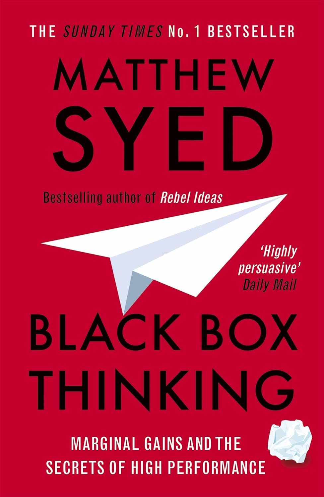
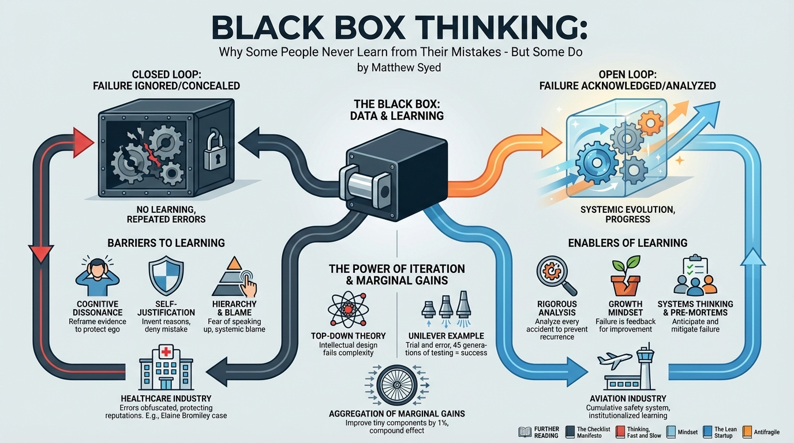

isbn-13: 9780698408876
Audible
AI Generated Content
Generated by gemini-3-pro-preview

Overview and Core Thesis
Matthew Syed’s Black Box Thinking investigates the relationship between failure and success, arguing that the most effective individuals and organizations are those that treat errors as learning opportunities rather than embarrassments to be concealed. The title references the flight data recorders (black boxes) used in aviation to analyze accidents. Syed posits that aviation has achieved an impressive safety record by institutionalizing the practice of learning from mistakes, whereas other industries—most notably healthcare and the judicial system—often suffer from “closed loops” where errors are ignored or rationalized due to psychological self-protection and systemic blame.
Key Concepts and Arguments
The Black Box Metaphor (Aviation vs. Healthcare)
Syed contrasts the safety culture of the airline industry with the medical profession. In aviation, every accident is rigorously analyzed to prevent recurrence, creating a cumulative system of safety. Conversely, the author argues that healthcare often operates as a "closed loop" where mistakes are obfuscated to protect professional reputations.
* *Case Study:* The book details the death of Elaine Bromiley during a routine sinus operation due to a "cannot intubate, cannot ventilate" emergency. The clinicians froze, losing track of time while adhering to their initial plan despite its failure.
* *Quote:* "In the medical world, the hierarchy is far steeper. A junior nurse who spots a consultant making an error is far less likely to speak up than a co-pilot who sees a captain making a mistake." (p. 26)Closed Loops vs. Open Loops
Syed distinguishes between two systems of handling information:
* **Closed Loops:** Failure is not reported, or the data is misinterpreted to confirm pre-existing beliefs. No learning occurs, and the same errors are repeated.
* **Open Loops:** Failures are acknowledged, reported, and analyzed. Feedback leads to systemic evolution.
* *Quote:* "A closed loop is where failure doesn’t lead to progress because information on errors and weaknesses is misinterpreted or ignored; an open loop is where feedback is rationally acted upon." (p. 13)Cognitive Dissonance and Self-Justification
The book explores the psychological mechanisms that prevent learning, primarily Leon Festinger’s theory of cognitive dissonance. When professionals (such as doctors or prosecutors) are confronted with evidence that they made a catastrophic mistake, it threatens their self-concept as competent and moral individuals. To resolve this psychological tension, they often reframe the facts rather than admit the error.
* *Example:* The book cites wrongful convictions where DNA evidence exonerates a suspect, yet prosecutors and police continue to insist on the suspect's guilt to avoid admitting they imprisoned an innocent person.
* *Quote:* "When we are confronted with evidence that challenges our deeply held beliefs we are more likely to reframe the evidence than we are to alter our beliefs... We simply invent new reasons, new justifications, new explanations." (p. 85)The Logic of Failure (The Unilever Example)
Syed illustrates the power of iterative failure through the story of Unilever solving a problem with clogged detergent nozzles. Mathematical experts failed to design a working nozzle from scratch (top-down theory). Biologists solved it by taking a working nozzle, creating ten slightly varied iterations, testing them, selecting the best, and repeating the process for 45 generations.
* *Argument:* Complexity is often best navigated through trial and error (evolution) rather than intellectual design.
* *Quote:* "Evolution is a process of testing and learning. It is a process of using failure to drive progress." (p. 189)Marginal Gains
The book discusses the strategy of "aggregation of marginal gains," popularized by Sir Dave Brailsford of British Cycling. This approach involves breaking down a large goal into tiny components and improving each by 1 percent. While individual changes may seem insignificant, the compound effect is transformative. This requires the humility to examine small imperfections.
* *Quote:* "Success is the sum of small efforts, repeated day in and day out." (p. 211)The Fixed vs. Growth Mindset
Drawing on the work of psychologist Carol Dweck, Syed connects the willingness to engage with a "Black Box" system to individual mindsets.
* **Fixed Mindset:** Believes intelligence and talent are static. Failures are viewed as a lack of ability, leading to defensiveness.
* **Growth Mindset:** Believes abilities can be developed. Failure is viewed as essential feedback for improvement.Pre-mortems and Systems Thinking
Syed advocates for systems that anticipate failure before it happens. He references the "pre-mortem" technique (imagining a project has failed and working backward to determine why) as a way to mitigate the optimism bias that blinds teams to potential pitfalls.Further Reading
- The Checklist Manifesto: How to Get Things Right by Atul Gawande Explores similar themes regarding safety and complexity in medicine, advocating for simple checklists to prevent errors.
- Thinking, Fast and Slow by Daniel Kahneman Provides the psychological foundation for the cognitive biases (like confirmation bias and optimism bias) discussed by Syed.
- Mindset: The New Psychology of Success by Carol S. Dweck The source material for the fixed vs. growth mindset concepts utilized in Black Box Thinking.
- The Lean Startup by Eric Ries Applies the concept of rapid iteration, testing, and learning from failure (the “pivot”) to the business world.
- Antifragile: Things That Gain from Disorder by Nassim Nicholas Taleb Discusses systems that not only withstand shock and failure but actually improve because of them.